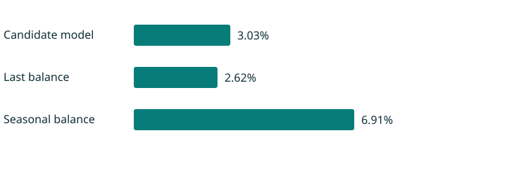

Inventory funding, before the forecast
Keep the last-balance baseline. The candidate model does not earn promotion, and two issuers have stale or incomplete current inputs.
MODEL PROMOTION FAILEDThe baseline wins

2024–2026 observed outcomes. Actual filing dates gate training labels.
Decision and evidence
The fixed 2022-selected ridge specification was tested on 47 later issuer-quarter outcomes across 5 issuers. WAPE is 3.03%, versus 2.62% for the last-balance baseline. The approximate issuer-cluster interval for MAE improvement is $-28.61M to $-1.25M (negative means worse).
Prequential nominal 90% bands cover 86.11% of 36 eligible test outcomes. Eleven early test forecasts have insufficient prior calibration after the information-timing guard. There are only five test issuer clusters; intervals have no guaranteed coverage under sector dependence.
Boundaries that change the decision
The normalized panel excludes missing standardized facts rather than mapping Lam’s restructuring-excluded cost or Cohu’s tax-inclusive revenue into different concepts. LRCX is stale and COHU is historical-only. Current diagnostics cover four issuers. Inventory is a balance at cost, not committed procurement or cash outflow; payables, lead times, obsolescence, backlog and SKU constraints are missing.
Do not use the candidate model to replace the baseline. Resolve the current-data exclusions and bring procurement evidence before setting a funding commitment.
Audit trail
Normalized panel · Source lineage · Original filing checks · Exclusions · Revision differences
Read the executive memo for the decision sequence; methods, source definitions, measured resume bullets and five implementation-based interview answers are in the project folder.
Open analyst workbench →